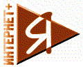
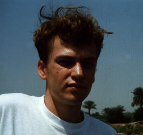
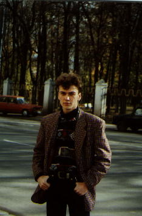

Вот думал я думал что разместить на странице и не
выдумав ничего оригинального, написал свою биографию (вдруг кому интересно).

Зовут меня Осипов Илья Викторович,
живу я в Нижнем Новгороде (бывший Горький).
Pодился я 6 января 1975 года в городе Горьком,
где и живу по сей день, только в центр переехал.
Ничего особенно интересного до окончания мною школы не было,
если не считать что в восьмом классе у меня завелся свой компьютер (Нейрон)
Несколько лет назад, я поступил в
Нижегородский Государственный Университет.
Сейчас я студент 5 курса ННГУ Экономического ф-та.
Но несмотря на свою профилирующую специальность
основные мои достижения относятся к компьютерам.

В первый же год своего обучения,
мой преподаватель информатики Громницкий В.С
углядев мой талант, неожиданно отправил меня
на университетскую олимпиаду по программированию,
заменив другого человека который заболел.
Так случайно я попал туда.......... и
о чудо я занял первое место, обыграв матерых
студентов - программистов со старших куров
и специализированных факультетов.
Так ко мне пришло признание.
На следующий год мы с двумя моими товарищами
(Илья Семенов и Роман Романов)
организовали
фирму "Дион" и пытались заработать деньги на
разработке программного обеспечения,
мы делали электронную карту Нижнего Новгорода, сделали демо версию, но работать
бесплатно не хотелось и мы зеленые студенты обивали пороги
разных учреждений пытаясь найти заказчиков,
.... все говорили здорово, но платить никто не хотел,
хотя нашу фирму даже приняли в ГИС-Асоциацию,
и нас месяц обучали картографии (бесплатно) в МГУ.
Но платежеспособных заказчиков мы так и не нашли,
а энтузиазм рано или поздно кончается.
Программу Мегаполис НН (Карта Нижнего Новгорода)
вы можете скопировать себе на диск.
Постепенно уйдя из диона я стал подрабатывать в
торговой фирме отца - ООО "Медсервис".
Где постигал азы коммерции поставляя медицинским
и учебным организациям - компьютеры.
Основная учеба в универе никогда меня особенно не обременяла.
Экономфак - халява.
В 1995 году я стал участником Всероссийской олимпиады
по программированию обучающих систем, и занял по сумме баллов 7 место,
вместе с Ильей Семеновым (олимпиада командная).
После этого вел полгода факультатив по Дельфи в университете,
но основном для меня слушали преподаватели....
В конце 1996 состоялась новая Всероссийская
олимпиада по программированию, учитывая прошлый опыт
участия и смекнув что главное в программе это ее эффектность,
мы не долго думая отсняли ключевые моменты
будущей обучающей программы на видеокамеру....
и подобрали множество иллюстраций.
Все что оставалось сделать это скомпоновать
все это и получить самую эффектную программу
из представленных. Достаточно сказать что все
это творение занимало 400 мегабайт......
Как выяснилось я сделал правильную ставку
на мультимедиа и мы с Ильей получили первое место.
Несколько слов о моих увлечениях:

-
Кроме основного моего "Хобби" - компьютера, и интернета.
-
Я коллекционирую монеты всех стран и народов.
-
Обожаю путешествовать (На фото я на фоне Пирамид)
-
Люблю водные виды спорта - плавать, нырять с аквалангом, серфинг.
-
Не домосед, по ночам шатаюсь по дискотекам,
если остаются силы и позволяют средства.
-
Интересуюсь историей религий.
-
Читаю в основном фантастику.
-
Играю только в бильярд.
-
А еще люблю своих друзей, и шумные вечеринки.
Пока...... пишите.

Created 30'02.97
Updated 27'05.97